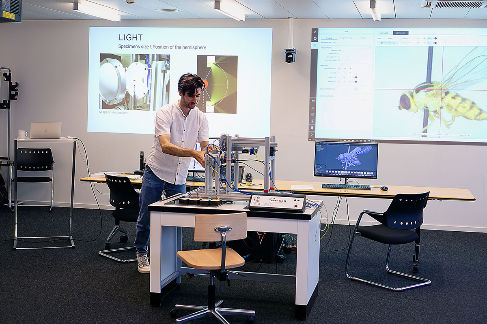
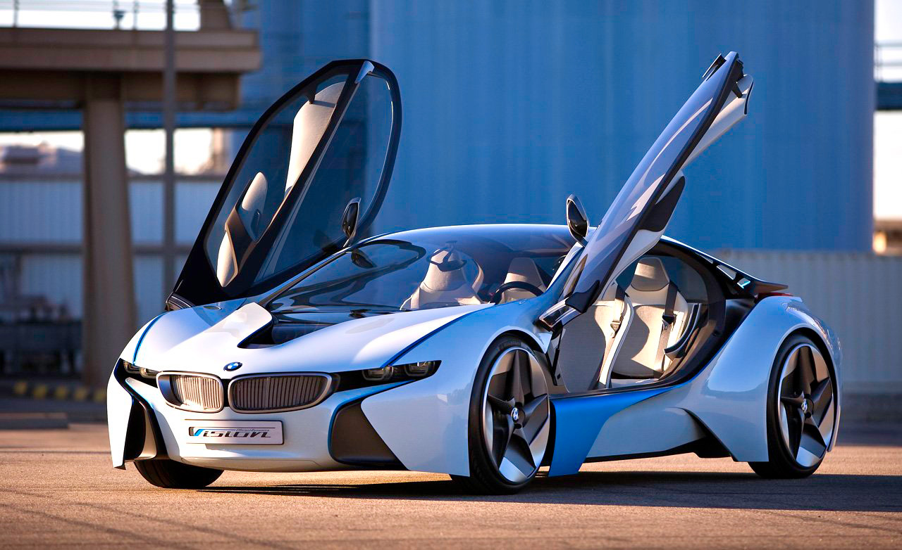
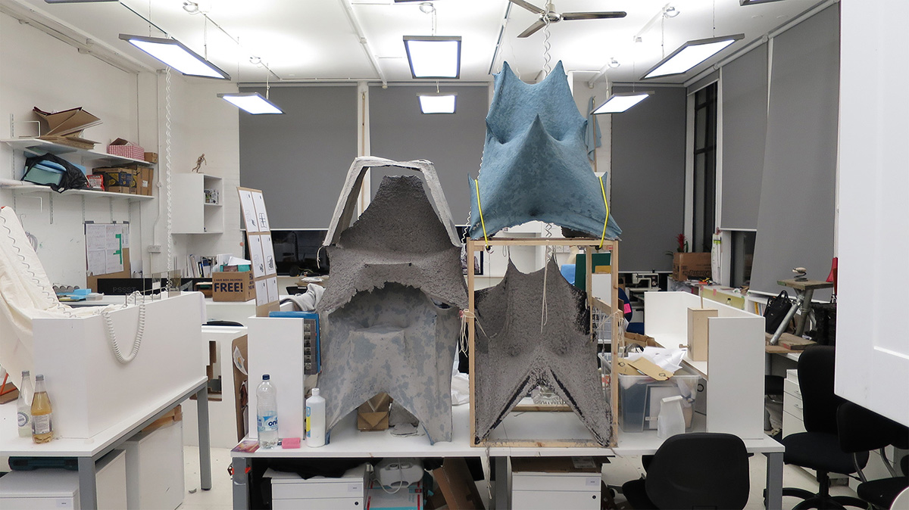

2022 - today
digital twin
At the Entomological Collection of ETH Zurich, we are conducting a pilot project for 3D scanning of 2,400 insect type specimens from five collections in Switzerland.

At ETH Zurich, I led the development of a pioneering 3D scanning process to digitize over 2,400 type specimens. This project not only set new standards in 3D digitization but also focused on efficiency and cost reduction. I oversaw the design of machine components, the upgrade of control systems, and meticulous documentation while managing a diverse team. My emphasis on quality control and risk management ensured the integrity of the unique specimens, all while maintaining cost-effectiveness.
- Globe
Check out more insect specimens
'Designing an Applied process
of infinite small objects
to 3D models'
3D digitization process
The ambitious goals of the project focused on three key areas: first, creating a safe and efficient handling process for the delicate, one-of-a-kind specimens; second, developing an automated workflow for efficient 3D model generation; and third, redesigning the image acquisition machine to successfully capture specimens as small as 1.5 mm. These objectives aimed to enhance precision, streamline processes, and ensure the protection of valuable specimens.
- Github
Check out automation scrips
Engineering, prototyping and testing
To meet our production targets while simultaneously developing and testing new tools and machinery for upcoming projects challenges, we had to implement a hybrid process. This approach allowed us to balance both objectives effectively.
2017 - 2019
Omni
At the University of Tokyo, we started the Ocean Monitoring Network Initiative, a platform that helps people to understand the oceans better.

We do not have enough information about the ocean that surrounds us. To better understand the impacts of climate change, marine food resources, pollution, and our environment as a whole, we need more comprehensive data. OMNI is a versatile, low-cost, and easily deployable ocean sensing system designed to collect detailed and diverse information from the sea. The ocean sensor float consists of multiple modules, which can be equipped with various sensors, energy-harvesting units, and communication options.
'A flexible use, low-cost,
easily deployable
ocean sensing system
Concept 'Keep it simple'
Reliability is key, requiring careful consideration of every component and connection. The units must be built to endure the harsh ocean environment and perform in any weather conditions.

Engineering, prototyping and testing
We began with a simple waterproof box and sensors connected to an Arduino. Armed with this prototype, we reached out to research laboratories for feedback. It quickly became clear that most ocean research equipment is custom-made and prohibitively expensive. In response, we developed OMNI—a low-cost, modular float system that is easy to assemble. Both the technology and the data it collects are open-source, freely available to anyone. So far, over 35 units have been built in the DLX Design Lab.
I began my career at BMW Group as a teenager and spent a total of 14 years with the company. Over time, I worked in various departments before ultimately finding my place in the design team. I led both digital and physical design models. A digital twin would complement the full-scale 1:1 clay model, allowing for seamless data exchange with the engineering teams.
'Working on the intersection
of design and engineering'

The 'Vision Efficient Dynamics' concept car was one of the most exciting and unconventional project I worked on at BMW. It all began with the extraordinary designer Mario Majdandzic, who brought his vision to life through a detailed cardboard model. From there, it was an exhilarating process—starting with a polygon model and, within about eight weeks, refining it into final exterior surfaces using a Class-A NURBS model.
most recent projects
At BMW Group, I worked on the Mini 3-Door (R56) Phase 3, the BMW 3 Series GT (F34) Phase 3, the i8 Spyder concept concept car. In these roles, I was responsible for modeling the exterior surfaces within the design department.
The chair is crafted from recycled newspaper and PVA glue, showcasing the versatile potential of paper as a material. Its organic shape ensures a sturdy and structurally design. The choice of material was inspired by experiments with small-scale papier-mâché models and insights from paper pulp applications in the packaging industry. With this work, I aimed to demonstrate that paper can structurally compete with modern composite materials.
The Art of Crafting
The process begins with a flat piece of elastic fabric, such as spandex, which is stretched into a wooden frame to form the desired shape. A self-developed papier-mâché spray gun is then used to temporarily freeze the fabric's shape. After a drying period, a second layer of the recycled newspaper and PVA glue mixture is applied to provide final structural strength. By tinting the second layer, an interesting pattern can be achieved.
This technique requires minimal machinery, emphasizing the simplicity and sustainability of the process. Additionally, the spandex fabric can be reused multiple times for creating different shapes.

'Success Achieved
After Numerous Prototypes
and Setbacks'
The journey is the destination
Developing a method to make papier-mâché structurally capable was a significant challenge. It took many prototypes and setbacks to perfect this approach. The beauty of the process lies in its resourcefulness, requiring only basic tools and materials. The result is a lightweight chair that celebrates the potential of paper while emphasizing craftsmanship and sustainability.

The project is focused on the LG OLED Technology for the Euroluce, Milan design week. The concept introduces the technology with its features and possibilities in the lighting sector. The thin OLED strips are lightweight, shatter-resistant and offer a homogenous light surface.
'A shape gently animated
by the gravitational force'

Medusa, comprises eight flexible OLED panels that extend out from a central ring. It aesthetic drives from plankton floating in the ocean. The shape of the strips is described via the gravitational force pulling the weights at the end of the strip. It becomes gently animated without employing additional energy.
- Globe
Check out the interview with Ross Lovegrove
Impressions

The aim of the project is to enhance understanding of the ocean currents in Sagami Bay, Japan. Located southwest of Tokyo, it is one of the most popular seaside destinations for Tokyo residents. Predicting ocean currents in this area is particularly challenging due to the complex interplay between the Sagami Trench and global ocean currents.
A device with maximum drag
The project was a journey of continuous iterations, sea trials, and adjustments to the design brief.
‘Users Insights turned,
the design concept
upside down’
Final desing choice

As we observed user behavior, it became clear that the technology needed to adapt. We incorporated a display into the system to provide immediate feedback, independent of network connectivity. Designing a reliable device that could float low in the water while enduring the harsh ocean environment presented significant challenges.

Ultimately, we successfully developed and produced two fully deployable devices in our laboratory, meeting the rigorous demands of oceanic use.
Engineering, prototyping and testing
Our exploration began with a series of low-fidelity prototypes to evaluate various design choices in the ocean environment. Leveraging OMNI MKIII device technology, we developed a series of real-time drifters to gather critical data.